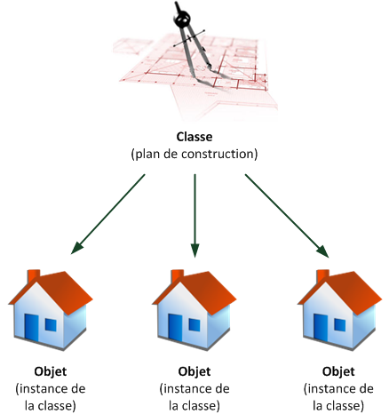

Révisions : PHP orienté objet
Un objet, c'est quoi ? Un objet c'est… un mélange de plusieurs variables et fonctions. Le but de cette quête est de commencer le PHP orienté objet. Vous allez voir dans cette quête les prémices du PHP Orienté Objet.
Objectifs
- Utiliser et créer des classes et des méthodes
- Créer une instance d'objet
Les classes et les objets
Première introduction sur la programmation orientée objet avec une première découverte et une présentation de la syntaxe d'écriture de classes. La classe est un plan, une description de l'objet. Imaginez qu'il s'agit par exemple des plans de construction d'une maison. On appelle classe la structure d'un objet, c'est-à-dire la déclaration de l'ensemble des entités qui composeront un objet. Un objet est donc « issu » d'une classe, c'est le produit qui sort d'un moule. En réalité, on dit qu'un objet est une instanciation d'une classe, c'est la raison pour laquelle on pourra parler indifféremment d'objet ou d'instance.

Tu vas pouvoir commencer avec le PHP orienté objet et commencer à découvrir comment ça marche.
Un peu de magie
Avec ce combat, tu vas pouvoir comprendre comment fonctionnent les objets, les classes... Tout en t'entraînant.
Avec cette vidéo, tu vas pouvoir apprendre en t'amusant le principe des classes et des objets. Teste les exemples que te donnera le monsieur et fais l'exercice avec lui. Dans un premier temps, limite toi aux 4 premières vidéos. Tu pourrais continuer la playlist plus tard.
Les instances
L'objet est une instance de la classe, c'est-à-dire une application concrète du plan. Pour reprendre l'exemple précédent, l'objet est la maison. On peut créer plusieurs maisons basées sur un plan de construction. On peut donc créer plusieurs objets à partir d'une classe.
Cette ressource est la documentation officielle de PHP pour voir un peu plus les instances.
Challenge
Réaliser mes premières classes en PHP Orienté Objet, et ma première instance
Dans un fichier PHP, crée une classe Personne avec pour Attributs :
- Nom
- Prénom
- Adresse
- Date de naissance
- Créer une méthode pour afficher les infos de 'Personne' et une autre pour modifier l'adresse.
- Crée une méthode qui calcule l'âge à partir de la date de naissance.
- Pour soumettre ta solution, uploade le fichier dans un gist, puis poste le lien du gist.
Critères de validation
- La classe contient trois méthodes
- Un nouvel objet est créé et s'affiche
- l'âge s'affiche